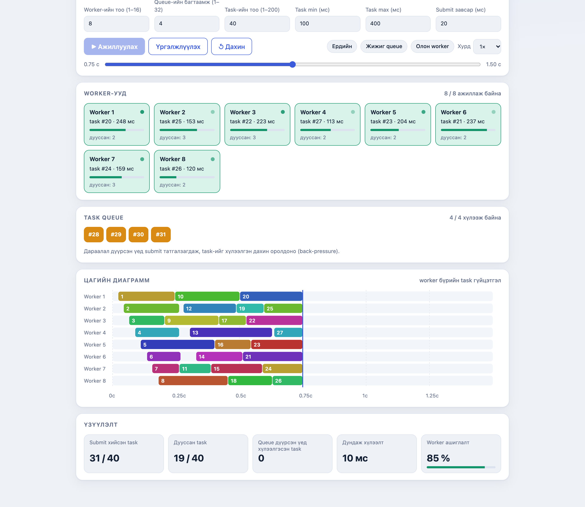
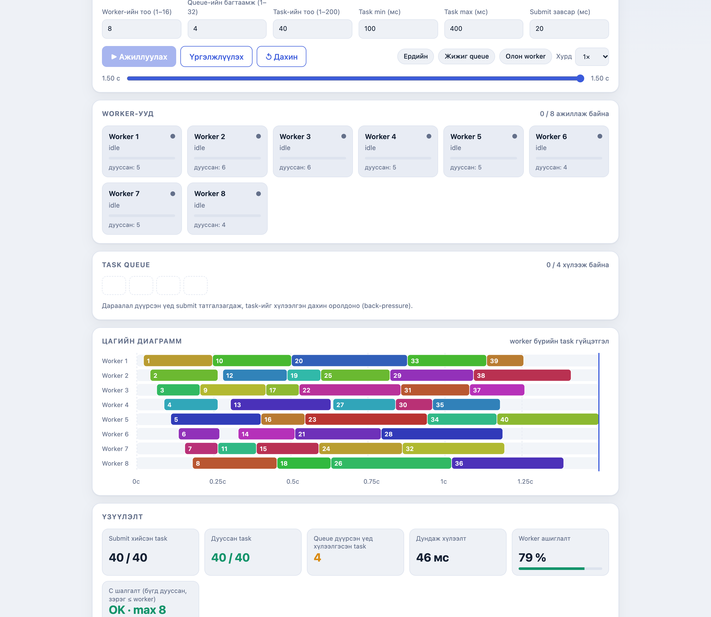
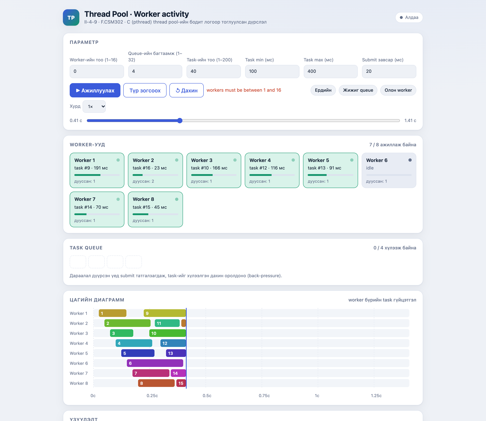

ШИНЖЛЭХ УХААН, ТЕХНОЛОГИЙН ИХ СУРГУУЛЬ
Харилцан шүүмж
F.CSM302 Үйлдлийн систем
Бие даалт 1 · 2026-2027 оны хичээлийн жилийн намар
Шүүмжлэгч код: V-1-4 (Kernel Data Structures)
Шүүмжилсэн код: II-4-9 (Designing a Thread Pool)
Огноо: 2026-10-31
Бэлтгэсэн: V-1-4 баг
Улаанбаатар хот
Агуулга
Шүүмжийн мэдээлэл ба арга
1. Ажлын ойлголт
2. Туршилтын орчин
3. Build ба Run
4. Туршилт
5. Дүрслэлийн үнэлгээ
6. Давуу тал
7. Асуудал ба зөрүү
8. Сайжруулах санал ба хүлээн авах шалгуур
9. Дүгнэлт
Хавсралт A. Бөглөсөн шүүмжийн маягт
Хавсралт B. Давтах команд ба эх сурвалжийн жагсаалт
Хавсралт C. Teams сувагт бичих хариу
Шүүмж: II-4-9 «Designing a Thread Pool»
V-1-4 багийн шүүмж · F.CSM302 Үйлдлийн систем · Бие даалт 1 · 10-р долоо хоног
Шүүмжийн мэдээлэл ба арга
Шүүмжлэгч баг / код V-1-4 · Kernel Data Structures (бүлэг 3 – Processes) Шүүмжилсэн баг / код II-4-9 · Designing a Thread Pool (бүлэг 7 – Threads and Concurrency) Эх сурвалжийн хаяг https://github.com/Huslenc/Vildliin-sistem-biy-daalt1-bag-2-4-9 (main салбар)Шалгасан commit 1168bf0fe97c76151175c22217da980644b5515e · 2026-10-30 18:50:45 +0800Хамрах баримт бичиг 27 хуудас тайлан, 14 хуудас гарын авлага, README, src/, tests/, serve.py, ui/ Шүүмжийн орчин macOS 26 (arm64) · Apple clang 17.0.0 · GNU Make · Python 3.9.6 · Google Chrome Огноо 2026-10-31
Шүүмжийн арга. Бид текст уншиж дүгнээгүй. Repository-г татаж, өөр машинд бүрэн build хийгээд, тайлан дээрх тоо хэмжээ бүрийг өөрөө давтан гүйцэтгэв. Мөн веб интерфейсийг жинхэнэ серверээр ажиллуулж, дэлгэцэнд харсан тоог C программаас гарах JSON логтой тооцоогоор харьцуулсан (5-р хэсэг). Доорх «Бидний харсан үр дүн» багана дахь тоо болгон эдгээр бодит командаас гарч ирсэн:
make # build: анхааруулга гарах эсэхийг шалгав
make test # автомат тест
./tpdemo W 32 40 100 300 0 1 # W = 1, 2, 4, 8, 16 — хурдатгалын давталт
./tpdemo 4 3 40 1 5 0 S # S = 11, 22, 33 — 30 удаа давтан тогтвортой байдал
./tpdemo 0 4 10 10 30 0 # болон бусад 9 буруу оролт (тэдний Хүснэгт 8)
make tsan && ./tpdemo … # ThreadSanitizer (macOS-д ажилласангүй)
python3 serve.py 8123 # сервер ажиллуулж, /api/run ба UI-г шалгав Хязгаарлалт. Энд бичсэн дүгнэлт нь зөвхөн дээрх commit ба бидний туршсан хүрээнд хамаарна. Бидний машин дээр давтагдаагүй зүйлийг «буруу» гэж, давтагдсан зүйлийг «баталсан» гэж бичсэн; шалгаж чадаагүй зүйлийг тэгж л заасан. Нэг зүйлийг онцгойлбол: commit-ийн тоо эсвэл түүхэнд нэр харагдахгүй байх нь «ажил хийгээгүй» гэсэн нотолгоо биш — багийн ажил ихэвчлэн нэг гишүүнээр дамжуулан хийгддэг тул бид 3-р олдлын хэсэгт үүнийг асуулт хэлбэрээр тавьсан.
1. Ажлын ойлголт
II-4-9 баг сурах бичгийн Chapter 7-ийн Programming Project 1-ийн дагуу thread pool -ийг C хэл, POSIX thread, mutex, condition variable ашиглан хэрэгжүүлсэн. Зорилго нь ажиллах чадлыг урьдчилан тодорхойлсон тооны worker thread-ээр хязгаарлаж, ирж буй task-уудыг дараалалд хүлээлгэн, аль нь ч зэрэг ажиллаж буй task-ийн тоо хэтэрч болохгүйгээр гүйцэтгэх явдал.
Бүтээл гурван хэсэгтэй:
src/threadpool.cpthread_mutex_t, нэг not_empty condition variable бүхий pool. pool_init, pool_submit, pool_shutdown.src/tpdemo.cserve.py + ui/index.html
Бидний ойлгосноор энэ ажлын гол онол нь producer–consumer буюу хязгаартай buffer-ийн синхрончлол: submit хийгч нь producer, worker thread-үүд consumer, дараалал нь buffer. Сурах бичгийн 3-р бүлгийн ready queue-тэй ижил загвар — процессууд (task-ууд) гүйцэтгэгч (CPU буюу worker-ийн slot) хүлээж дараалалд зогсдог. Тэдний хамгийн чухал шийдэл бол task-ийг mutex барьсан хэсгийн гадна гүйцэтгэдэгт нь оршино: өөр аргаар бол нэг task ажиллаж байхад бүх submit хийгч хүлээж, pool-ийн утга алга болно.
2. Туршилтын орчин
Зүйл Тэдний гарын авлагад заасан орчин Бидний ашигласан орчин Үйлдлийн систем Linux (README-д «Туршсан орчин: Debian», Windows-д WSL ашиглахыг заасан) macOS 26 (arm64) — өөр платформ, өөр kernel C хөрвүүлэгч gcc 14.2.0 Apple clang 17.0.0 Python 3.13.5 3.9.6 Бусад GNU make, браузераар UI GNU make, Google Chrome Код авах арга — git clone → git checkout 1168bf0f; тэдний кодыг огт өөрчлөөгүй, зөвхөн ажиллуулсан
Өөр платформ, өөр хөрвүүлэгч сонгосон нь санаатай зүйл: зорилго нь «бидний машин дээр ажиллаж байна» гэж батлах биш, гадаадын машинд давтагдах эсэхийг шалгах явдал байсан. Гарын авлага §2.9-д «macOS дээр туршаагүй» гэж заасныг бид үгүйсгэж, яг тэр платформ дээр бүрэн гүйцэтгэв (R5-ийг үз).
3. Build ба Run
Алхам Команд Хүлээгдсэн үр дүн Бодит үр дүн Дүн Бэлтгэх git clone … + git checkout 1168bf0fКод бүрэн ирнэ 19 файл, src/ tests/ ui/ docs/ serve.py Makefile бүрэн ирсэн ✓ Build makeАлдаа, анхааруулгагүй Анхааруулга гараагүй, tpdemo үүссэн ✓ Автомат тест make test6 тест PASS, exit 0 5 ажиллагааны + 1 буруу оролтын тест = 6/6 PASS , exit 0 ✓ CLI ажиллуулалт ./tpdemo 8 4 40 100 400 20 1JSON лог + summary, бүх task дуусна completed 40/40, max_running 8, "ok": true ✓ Сервер python3 serve.py 8123127.0.0.1:8123 дээр UI гарна UI ажилласан, /api/run JSON-оор хариулж байна ✓ UI ажиллуулалт Хуудас дээр «Ажиллуулах» дарна Дүрслэл тодорхойлолтын дагуу явна Worker-үүд, дараалал, цагийн диаграмм, үзүүлэлт бүр ажилласан ✓ Цэвэрлэх make cleanБүтээгдэхүүн файл устана Ажилласан ✓
Дүгнэлт: гарын авлагын заавар гадуур машинд ч дагагдахуйц , нэмэлт алхам, далд хамаарал, орчин өөрчлөх шаардлага гараагүй.
4. Туршилт
4.1 Давтан шалгасан шалгалтууд
Шалгасан зүйл Тэдний тайлангийн мэдээлэл Бидний харсан үр дүн Дүн Build цэвэр байдал анхааруулгагүй Apple clang 17 дээр ч анхааруулгагүй ✓ make test6/6 PASS 6/6 PASS, exit 0 ✓ Бүх task дуусах completed = N 16 worker / 32 дараалал / 200 task хүртэлх бүх ажиллуулалтад completed = N ✓ summary.ok дотоод шалгалтmax_running ≤ workers 30 удаа давтан ажиллуулсны 30/30 нь "ok": true ✓ Буруу оролт (Хүснэгт 8) 10 мөрөнд exit 1 хүснэгтийн 10/10 мөрөнд яг invalid parameters мессеж, exit 1 ✓ atoi-ийн хязгаар (§9.3)«12abc» → 12 гэж хүлээн авна ./tpdemo 12abc 4 10 10 30 0 exit 0 гаргаж зөвшөөрөв — өөрсдийгөө зөв шүүмжилсэн✓ Логийн буферийн хэмжээ (log_cap = N*5+W*4+64) — 4 хязгаарын тохиргоонд үйл явдлын тоо багтаамжаас хэтрээгүй: 863/1128, 1001/1068, 236/346, 836/1128 — үйл явдал алдагдаагүй ✓ ThreadSanitizer (§7.3) 3 seed-ийн ажиллуулалт бүрд анхааруулгагүй macOS 26/arm64 дээр TSan-тай хувилбар хөрвүүлэгддэг ч exit 139 (segfault), гаралт 0 байт. Энэ бол тэдний кодын алдаа биш, платформын хязгаар; тиймээс бид энэ шалгалтыг давтаж чадсангүй △
4.2 Гүйцэтгэлийн туршилт 1 — worker-ийн тоо
Команд: ./tpdemo W 32 40 100 300 0 1, W = 1, 2, 4, 8, 16. Параметр тэднийхтай яг ижил, зөвхөн машин өөр (бид macOS/arm64 + Apple clang; тэд Debian + gcc 14.2.0).
Worker Тайлан (мс) Бид (мс) Зөрүү Тайлангийн хурдатгал Бидний хурдатгал 1 8210 7967.3 −3.0% 1.00× 1.00× 2 4123 4014.1 −2.6% 1.99× 1.98× 4 2101 2085.0 −0.8% 3.91× 3.82× 8 1166 1134.8 −2.7% 7.04× 7.02× 16 639 644.4 +0.8% 12.84× 12.36×
Дүгнэлт. Өөр машин, өөр хөрвүүлэгч дээр 5 хэмжилт бүр 3%-иас бага зөрөөтэй давтагдсан нь тэдний хэмжилт найдвартай болохыг харуулж байна. 16 worker-т 12.4× гарах нь цэвэр шугаман 16×-д хүрэхгүй — үүнийг §9.1-д «Task-ууд usleep хийдэг (I/O-той адил) учраас 1 цөмтэй орчинд ч worker-ийн тоо 16 болтол хурдатгал бараг шугаман хэвээр байв» гэж зөв тайлбарласан. Харин §8.2-ын «8 болон 16 worker-т ашиглалт буурсан шалтгаан: 40 task worker-ийн тоонд тэгш хуваагдахгүй, сүүлийн «давалгаанд» зарим worker ажилгүй үлддэг» тайлбар 8 worker-т хамаарахгүй: 40 ÷ 8 = 5 гэж бүтэн хуваагдаж байна . Зөвхөн 16 worker-т 40 ÷ 16 = 2.5 тул сүүлийн давталт бүтэн биш. Иймээс 8 worker-ийн ашиглалт буурсан шалтгаан өөр (submit-ийн 20 мс завсар, task-ийн санамсаргүй урт, OS scheduler) байх магадлалтай — үүнийг ялгаж харуулахын тулд 48 эсвэл 64 task-аар нэмж туршихыг санал болгоё (S4).
4.3 Дарааллын багтаамж ба ачааллын туршилт
«Дарааллын багтаамж нийт хугацаанд нөлөөлөхгүй, зөвхөн task-ийн хүлээлтэд нөлөөлнө» (§8.2 туршилт 2) гэдгийг бид кодоор шалгаж баталлаа. pool_submit дүүрсэн үед шууд 1 буцаадаг (threadpool.c:82-85), харин tpdemo татгалзагдсаны дараа usleep(3000) хийгээд дахин оролддог (tpdemo.c:65-66). Иймээс ямар ч task хаягдахгүй, ачаалал бүрэн биелнэ; дараалал нь зөвхөн түр зуурын буфер үүрэг гүйцэтгэж байна. Энэ бол сурах бичгийн producer–consumer асуудлын утгад нийцсэн зөв загвар.
4.4 Тогтвортой байдал ба хязгаарын нөхцөл
30 удаа давтан ажиллуулалт (./tpdemo 4 3 40 1 5 0 S, S = 11, 22, 33): 30/30 нь "ok": true, нэг ч удаа task алдагдаагүй, дараалал дүүрсэн үед зөвхөн rejected үйл явдал бүртгэгдсэн.Хязгаарын 4 тохиргоо (1 worker/1 дараалал, 16 worker/32 дараалал, 200 task гэх мэт): бүгд амжилттай, логийн буфер хангалттай.Буруу оролтын 10 тохиолдол : бүгд exit 1 + invalid parameters; серверийн LIMITS шалгалт мөн адил хүсэлтийг 400 кодоор татгалзсан.Серверийн аюулгүй байдал : serve.py нь subprocess.run(жагсаалт) ашигласан (shell-оор дамжуулах замгүй, injection-ийн эрсдэлгүй), зөвхөн 127.0.0.1 хаягт хүсэлт хүлээн авдаг, мужийг LIMITS хүснэгтээр шалгадаг.
5. Дүрслэлийн үнэлгээ
Энэ хэсэгт бид UI-г зүгээр «сайхан харагдаж байна» гэж үнэлээгүй. /api/run-ийн хариу болгон гарч буй JSON логийг тусад нь авч, дэлгэцэнд харуулсан тоо бүрийг тэр логоос бид өөрөө дахин тооцоолж харьцуулсан. Ингэснээр «дүрслэл үнэхээр доод талын C программын үр дүнг харуулж байна уу, үүнийг сайхан болгож зурахдаа өөрчилсөн үү» гэдгийг шалгасан.
5.1 Дүрслэлд юу харуулсан бэ
Блок Агуулга Бидний шалгалт Параметр Worker (1–16), дараалал (1–32), task (1–200), task min/max мс, submit завсар, гурван урьдчилсан тохиргоо, хурд 0.5×–4× ✓ Worker-ууд Карт бүр: idle эсвэл task #N · X мс, явцын зурвас, «дууссан» тоо; дээр нь «N / W ажиллаж байна» ✓ Task queue Багтаамжтайгаа тэнцүү тооны байрлал, дотор нь task-ийн дугаар; доор нь back-pressure тайлбар ✓ Цагийн диаграмм SVG: worker бүрт мөр, task бүр өнгөөр ялгагдсан зурвас, 0с–1.25с тэнхлэг, одоогийн цагийн босоо шугам ✓ Үзүүлэлт Submit хийсэн, дууссан, дараалал дүүрсэн үед хүлээлгэсэн, дундаж хүлээлт, worker ашиглалт, C шалгалт ✓ (2 нь тооцоотой зөрүүтэй, доор) Тоглоомын удирдлага Ажиллуулах / Түр зогсоох / Дахин, хугацааны гулсагч ✓
5.2 Дэлгэц ба логийн тооны харьцуулалт
Тохиргоо: workers=8, queue=4, tasks=40, min=100, max=400, interval=20. Серверээс авсан JSON: completed 40, max_running 8, rejected_tasks 10, total_ms 1690.6, ok: true.
Шалгасан зүйл Дэлгэцэнд харуулсан Бидний логоос дахин тооцсон Нийцсэн үү Дууссан / submit хийсэн task 40 / 40 40 / 40 ✓ Зэрэг ажилласан worker-ийн дээд хязгаар «max 8» (C шалгалт OK) 8 ≤ 8 ✓ Цагийн 3 ялгаатай агшинд ажиллаж буй worker 8 / 8 / 5 8 / 8 / 5 ✓ Тэр агшинд дараалалд хүлээж буй task 3 / 4 / 0 3 / 4 / 0 ✓ Worker ашиглалт 81% 80.7% ✓ (дугуйрсан) Дундаж хүлээлт 85 мс 85.4 мс ✓ (дугуйрсан) Татгалзагдсан task-ийн тоо 10 rejected үйл явдалд дахин тоолохгүйгээр 10 task✓
Өөрөөр хэлбэл дүрслэл хуурамч биш: гулсагчийг дураар зөөж, DOM дахь «ажиллаж байна / хүлээж байна» тоог логийн тухайн агшинтай харьцуулбал зөрүүгүй таарч байна. Энэ бол энэ төрлийн ажлын хамгийн чухал, гэхдээ ихэнхдээ хамгийн сул хэсэг — энд хүчтэй тал.
5.3 Бодит ажиллуулалтын дэлгэцийн зураг

Зураг 1. Ажиллаж буй үе (0.75 с агшин): 8 worker-ийн карт, 4/4 дүүрсэн дараалал (#28–#31), цагийн диаграмм, үзүүлэлт, доор «Дараалал дүүрсэн үед submit татгалзагдаж…» тайлбар. 
Зураг 2. Дууссаны дараа: бүх worker idle, дараалал хоосон, 40 task-ийн бүтэн диаграмм, «40 / 40», «OK · max 8». 
Зураг 3. workers=0 буруу оролт: «Алдаа» төлөв, «workers must be between 1 and 16» мессеж гарч байна — гэтэл доорх карт, диаграмм, гулсагч нь өмнөх ажиллуулалтын төлөв хэвээрээ (R2-ийн нотолгоо). 5.4 Хэрэглээний чанар ба боломж
Тайлбарын чанар. Дүрслэл бүр дангаараа ойлгогдохгүй тул доор нь «Дараалал дүүрсэн үед submit татгалзагдаж, task-ийг хүлээлгэн дахин оролдоно (back-pressure)» гэсэн нэг мөр тайлбар өгсөн нь зөв сонголт.Хүртээмж. Өнгөөр төдийгүй aria-label болон текстээр төлөвийг заасан; prefers-reduced-motion тохиргоог хүндэтгэж анимацийг унтраадаг; өнгөний кодыг CSS хувьсагчаар нэг газар тодорхойлсон, харанхуй горимд нэрлэсэн өнгөтэй.Удирдлага. Хөтөч дээр гулсагч, «Түр зогсоох», «Дахин» товч эхний ажиллуулалтын өмнө идэвхгүй байгаа нь зөв; «Түр зогсоох» дарвал «Түр зогссон», үргэлжлүүлбэл «Ажиллаж байна» гэж төлөв солигдож байсныг бид бичиж авсан.Хязгаарлалт. Өнгөний хязгаартай тул 16 worker-ийн диаграмм дахь зурвасуудад өнгө давтагдана; хурд 4×-д тоглоом хурдан тул нүдээр дагахад хэцүү. Хоёулаа жижиг асуудал.
6. Давуу тал
Синхрончлолын загвар зөв сонгогдсон, гол алийг нь ойлгосон. Нэг mutex, нэг not_empty condition variable; хамгийн гол нь task-ийг mutex-ийн гадна гүйцэтгэдэг (threadpool.c:24-26). §9.2-т «хэрэв task гүйцэтгэх хугацаанд mutex барьвал submit хийгч хүлээж pool утгагүй болно» гэж зөв тайлбарласан — энэ бол даалгаврын гол санаа.Зохицох чанартай зогсолт. pool_shutdown нь shutdown флаг тавьж pthread_cond_broadcast дуудаад, дараа нь бүх worker-ийг pthread_join хийдэг тул дараалалд үлдсэн task алдагдахгүй. Бидний 30 ажиллуулалтын аль алинд нь completed = N гарсан.Үр дүнг өөрөө шалгадаг. summary.ok нь completed = N ба max_running ≤ W нөхцөлийг програм өөрөө шалгаж, UI дээр «C шалгалт OK · max 8» болгож харуулдаг. Хэрэглэгч нүдээр тоолохгүйгээр баталгаажна.Үнэхээр давтагдахуйц. Build, 6 тест, 5 гүйцэтгэлийн хэмжилт, 30 давталт, 10 буруу оролт — бидний машин дээр бүгд давтагдлаа (4.1, 4.2). «Ажиллуулалт бүрт хугацааны утга бага зэрэг өөр байж болно» (§1.9) гэж урьдчилан мэдэгдсэн нь зөв.Дүрслэл баримттайгаа нийцдэг. 5.2-ын 7 шалгалт бүрэн таарсан. Логийг C програм үүсгэж, веб түүнийг зөвхөн сэргээн тоглуулдаг архитектур нь буруу харуулах боломжийг багасгадаг.Серверийн аюулгүй байдал сайтай. subprocess.run(жагсаалт) (shell injection-ийн замгүй), зөвхөн 127.0.0.1, LIMITS хүснэгтээр мужийг шалгадаг, буруу оролтыг 400 кодоор цэвэр JSON-аар хариулдаг.Хязгаарлалтаа ихэвчлэн үнэн зөв бичсэн. §9.3-ийн atoi-ийн тухай мэдэгдэл бодитой («12abc» зөвшөөрөгдснийг бид баталсан), нэг submit thread, OS scheduler-ийн тодорхойгүй байдал тухай мэдэгдлүүд зөв.AI ашиглалт болон алдаагаа ил тод мэдэгдсэн. §2.10-т «UI болон README-ийн ноорогийг Claude-аар үүсгэсэн, кодыг баг өөрсдөө build/run хийж тестлэсэн» гэж заасан; логийн буфер дүүрч үйл явдал алдагдаж байсан алдаагаа олоод засаж, учир нь хамт бичсэн. Ил тод бичиглэлийг тэмдэглэе.
7. Асуудал ба зөрүү
Эрэмбэ: Critical ашиглах боломжгүй / Major үндсэн ажиллагаанд саад / Minor буруу бичиглэл, жижиг сул тал / Suggestion сайжруулах санал. Critical олдсонгүй.
R1 · Major — serve.py-ийн 120 секундын хязгаар параметрийн мужтай нийцэхгүй
Нөхцөл CLI болон серверийн шалгалт workers=1, tasks=200, max=5000 мс утгыг зөвшөөрдөг ; serve.py нь программыг timeout=120 секундаар хязгаарладаг. Давтах алхам python3 serve.py 8123 → GET /api/run?workers=1&queue=4&tasks=30&min=5000&max=5000&interval=0Хүлээгдсэн Ажиллагаа дуусах (30 × 5 с = 150 с) эсвэл хэтэрхий удаан тохиргоог эхлүүлэхийн өмнө татгалзаж тайлбарлах. Бодит 120 секундын дараа алдаа: {"error": "Command '[…/tpdemo', '1', '4', '30', '5000', '5000', '0']' timed out after 120 seconds"} Нотолгоо ба нөлөө Хамгийн муу тохиолдол 200 × 5000 мс ÷ 1 worker = 1000 с ≈ 16.7 минут , өөрөөр хэлбэл задгай параметрийн муж серверийн хязгаараасаа 8.3 дахин том. Хэрэглэгч UI-д зөвшөөрөгдсөн тохиргоогоор «500» алдаа хүлээн авна. §2.9-т «120 секундаар хязгаарладаг» гэж бичсэн боловч аль муж хэтрэхийг хаана ч заагаагүй.
R2 · Minor — Алдааны дараа дэлгэц дээр хуучирсан дүрслэл үлдэнэ
Нөхцөл Амжилттай ажиллуулалт хийсэн байх үед параметрийг буруу болгож дахин «Ажиллуулах» дарах. Давтах алхам 8/4/40/100/400/20 тохиргоогоор ажиллуулж дуусаад, workers=4 → 0 болгоод «Ажиллуулах». (Зураг 3.) Хүлээгдсэн Дүрслэл, үзүүлэлт, гулсагч цэвэрлэгдэж, зөвхөн алдааны мессеж үлдэнэ. Бодит «Алдаа» төлөв, «workers must be between 1 and 16» мессеж гарч ирэхийн зэрэгцээ worker-ууд «7 / 8 ажиллаж байна», диаграмм, гулсагчийн 0.41 с / 1.41 с утга өмнөх ажиллуулалтынх нь хэвээр харагдана. Нотолгоо ба нөлөө ui/index.html:149 — алдааны салаар ороод шууд return хийдэг, тиймээс хуучин төлөвийг цэвэрлэх код ажиллахгүй. Хэрэглэгч буруу ажиллуулалтын дүрслэлийг шинийг нь гэж андуурах эрсдэлтэй (багийн ажиллах явц дунд тохиолдох магадлал өндөр).
R3 · Minor — Хавсралт А1 бөглөгдөөгүй: гишүүн бүрийн хувь нэмэр баримт дээр харагдахгүй
Нөхцөл Хавсралт А «Ажлын төлөвлөгөө»-ийн Хүснэгт А1-д «гишүүдийн нэрийг бөглөнө» гэсэн заавар текст арилгаагүй үлдэж, «Хариуцсан гишүүн» багана бүх мөрөнд хоосон . Давтах алхам Тайлангийн Хавсралт А-г нээх; мөн git log --format='%an' | sort | uniq -c гүйцэтгэх. Хүлээгдсэн Хүснэгт А1-ийн мөр бүрт хариуцсан гишүүний нэр, өгөгдсөн бол commit/PR дугаар бичигдсэн. Бодит Багана хоосон. Git түүхэнд 19 commit-ийн 15-ыг B242270073, 4-ийг B241940004 бичсэн; бусад 3 гишүүн (B222270042, B232270097, B241960045) харагдахгүй, PR #2–#5-ийн гарчиг зөвхөн “Update X”. Нотолгоо ба нөлөө Тайлангийн эхэнд 5 гишүүний нэр бичигдсэн ч хэн юу хийснийг нотлох баримт хавсралтад байхгүй тул шүүгч, багийн ахлагч хянах боломжгүй. Анхааруулга: commit-ийн тоо бага, нэр харагдахгүй байгааг «ажил хийгээгүй» гэж ойлгох үндэслэлгүй — ихэнх багт push-ийг нэг гишүүн төвлөрүүлж хийдэг. Тиймээс бид үүнийг олдлоос илүү А1-г бөглөж тайлбарлах хүсэлт болгож тавьж байна.
R4 · Minor — Тайлан ба бодит код хоорондоо 3 газарт зөрнө
Зүйл Тайлангийн бичиг Бодит код pool_submit-ийн хамгаалалт (§5.4, Код 2)if (p->count == p->cap)if (p->shutdown || p->count == p->cap) (threadpool.c:82). Тайлангийн таталтанд p->shutdown || хэсэг дутууw талбарын утга (§4.3 жишээ болон §5.4 Код 2){"t":20.41,"e":"submit","w":0,"k":1} ба Код 2-т emit(p, "submit", 0, task_id), emit(p, "rejected", 0, task_id)Бодит код emit(p, "submit", -1, task_id) (threadpool.c:90) буюу "w": -1. Тэдний өөрсдийн тодорхойлолт «w — worker-ийн дугаар (1-ээс ), хамааралгүй бол −1 » гэж заасан тул тайлан дахь 0 утга кодтойгоо ч, өөрийнхөө тодорхойлолттой ч зөрж байна §9.3 «pool_init нь pthread_create-ийн алдааг шалгадаггүй» Хязгаарлалт гэж тоолсон Шалгадаг : if (pthread_create(...)) { pool_shutdown(p); return 1; } (threadpool.c:71-73). Энэ мөр худал тул устгаад, бодит хязгаарлалтаар (TSan-ийг Linux-ээс гадуур давтах боломжгүй гэх мэт) солих нь зүйтэй
R5 · Minor — macOS-ийн тухай мэдэгдэл баримт бичгүүдэд зөрчилдөнө
Нөхцөл Гарын авлага §1.2 «Дэмжих орчин: Linux (Debian, Ubuntu), macOS, Windows дээр WSL2 доторх Ubuntu» гэж тодорхой заасан; харин §2.9 Known issues-д «macOS дээр туршаагүй (зөвхөн Debian дээр туршсан)» гэсэн. Нэг баримт бичгийн хоёр хэсэг өөр зүйл хэлж байна. Давтах алхам macOS 26 / Apple clang 17 / arm64 дээр make, make test, ./tpdemo … гүйцэтгэх. Хүлээгдсэн Нэг л мэдэгдэл зөв, аль платформд юу хүртэл ажилладгийг тодорхой заасан. Бодит macOS дээр build анхааруулгүй, тест 6/6 PASS, 30/30 давталт амжилттай . Цорын ганц асуудал: -fsanitize=thread хувилбар хөрвүүлэгддэг ч ажиллуулахад segfault (apple-clang TSan-ийн хязгаарлалт). Нотолгоо ба нөлөө Хэрэглэгч §2.9-ийг дагавал macOS дээр огт оролдлого хийхгүй, §1.2-ийг дагавал ThreadSanitizer ч ажиллах гэж буруу хүлээлттэй болно. §2.9-ийг «macOS дээр build болон тест туршсан, TSan-ийг зөвхөн Linux дээр гүйцэтгэсэн» гэж тодруулах хэрэгтэй.
R6 · Minor — README-д хагарайсан зургийн холбоос ба илүү файл
Нөхцөл README 60-р мөрөд docs/screenshots/02_running_queue_full.png-г иш татсан. Давтах алхам Репозиториг татаад ls docs/screenshots; README-г браузераар нээх. Хүлээгдсэн Иш татсан файл байж, зургийн хавтас дахь файл бүр аль нэг баримт бичигт хэрэглэгдсэн. Бодит Файл байхгүй (хагарайсан холбоос). Мөн 1png (нэрийн алдаа), 2.png–6.png зэрэг аль ч баримт бичигт холбоогүй 6 файл үлдсэн. Нотолгоо ба нөлөө Репозиторын гадаад байдал, «баримт ба дүрслэлийн нийцэл» дээр сөрөг нөлөөтэй; засвар хялбар.
R7 · Minor — Хэмжилтэд программын эхлүүлэлт ба 20 мс хүлээлт орж байна
Нөхцөл tpdemo.c:59 «worker-үүд өөрсдийгөө мэдэгдэх хүртэл хүлээе» гэж usleep(20000) хийдэг бөгөөд t0 цагийг pool_init-ийн өмнө тавьдаг.Давтах алхам ./tpdemo 16 32 40 100 300 0 1 → total_ms-ийг лог дахь task-уудын бодит гүйцэтгэлийн нийлбэртэй харьцуул.Хүлээгдсэн total_ms нь зөвхөн task гүйцэтгэх хугацааг хэмжинэ.Бодит Pool үүсгэх зардал болон 20 мс total_ms-д орно. 16 worker-ийн 644 мс хэмжилтэд энэ нь ойролцоогоор 3% . Нотолгоо ба нөлөө Тогтмол нэмэгдэхүүд хоёр талд ижил тул хурдатгалын харьцаа жинхэнэ утгаасаа бага зэрэг бага гарна (бидний 12.36× үнэндээ арай их). Үр дүнгийн дүгнэлтийг эргүүлэхгүй ч, нарийвчлалын хувьд зааж бичих эсвэл засварлах нь зүйтэй.
7.1 Санал (Suggestion) эрэмбийн зүйлс
Код Олдсон зүйл Нотолгоо Санал S1 Татгалзлыг давхардуулахгүй байх арга бүрэн бус tpdemo.c:24-26 кодын тайлбарт «only once per task» гэсэн ч last_rej нь зөвхөн өмнөх task-ийг санаж чадна. Одоо нэг thread дараалуулан submit хийдэг тул ажилладаг; хоёр өөр task ээлжлэн татгалзвал лог давхарданаtask_id бүрт bool rejected_once[] маск хэрэглэх S2 Логийн буфер дүүрснийг мэдэгддэггүй if (!skip && log_n < log_cap) — дүүсвэл үйл явдал чимээгүй алдагдана . Одоогийн хэмжээ хангалттай гэдгийг 4.1-д баталсан боловч truncated тэмдэг байхгүй (§2.10-т өмнө нь яг ийм алдаа гарч байснаа засажээ)summary-д truncated талбар нэмж, UI дээр улаанаар харуулахS3 Submit хийгчийн давтамжит хүлээлт tpdemo.c:65-66 татгалзагдсаны дараа usleep(3000) хийж дахин оролддог — ажилладаг ч энэ нь busy-waitnot_full condition variable нэмбэл back-pressure илүү цэвэр шийдэгдэж, CPU хэмнэнэS4 Туршилтын сонголт дутуу 40 task / 16 worker нь 2.5 удаа л хуваагддаг тул §8.2-ын «сүүлийн давталт» тайлбар бүрэн биш (4.2) 48 эсвэл 64 task-аар нэмж туршиж, ашиглалт буурах шалтгааныг ялгаж харуул S5 CI, ASan/UBSan, LICENSE байхгүй .github/ хавтас олдсонгүй; Makefile-д tsan-аас гадна asan, ubsan target-гүй; LICENSE файл байхгүйGitHub Actions-д make && make test (ubuntu + macos matrix), make asan target, LICENSE сонгох S6 Нэрний бичиглэл 2 янз README: «Буминбаатар Цомирлог»; тайлан: «Буманбаатар Цоморлог» Зөв хэлбэрээ шийдээд хоёр баримт бичигт нэгтгэх
8. Сайжруулах санал ба хүлээн авах шалгуур
Доорх «Хүлээн авах шалгуур» багана нь тухайн засварыг бид дахин шалгахад юуг харвал «зассан» гэж үзэхийг заана. Өөрөөр хэлбэл эдгээр бол бидний давтан гүйцэтгэж болох тестүүд.
Код Засварын санал Хүлээн авах шалгуур R1 Шаардагдах хугацааг tasks × max_ms ÷ workers + interval × tasks томьёогоор урьдчилан тооцож, 120 секундаас их шаардагдах бол эхлүүлэхийн өмнө татгалзаад «энэ тохиргоо ойролцоогоор X минут зарцуулна» гэж мэдэгдэх; эсвэл хамгийн муу тооцоо 120 секундэд багтах үнэмлэхүй хязгаар тавих. Гарын авлагын «Түгээмэл алдаа» хүснэгтэнд (§1.9) run timed out мөр нэмэх. UI болон /api/run-д зөвшөөрөгдсөн аливаа тохиргоо timeout алдаа өгөхгүй; хэтрэх тохиргоо ойлгомжтой мессежтэй; бид 5–6 команд давтан гүйцэтгэж шалгана. R2 ui/index.html:149-ийн алдааны салаар хуучин дүрслэлийг цэвэрлэх (render(EMPTY) эсвэл resetView() дуудах), гулсагч болон «Түр зогсоох»-ыг идэвхгүй болгох.Амжилттай ажиллуулалтын дараа workers=0 болгоход «0 / 8 ажиллаж байна», хоосон дараалал, хоосон диаграмм, зөвхөн алдааны мессеж харагдана. R3 Хавсралт А1-ийн «Хариуцсан гишүүн» баганыг 5 гишүүний нэрээр бөглөж, файл болон бүлэг тус бүрийн хариуцлагыг заах; заавар текстийг устгах; боломжтой бол PR дугаар эсвэл хамтран ажилласан баримтыг нэмэх. Хүснэгт А1-ийн мөр бүр дээр нэр бичигдсэн; гишүүн бүрийн хувь нэмэр файл/бүлгээр тодорхой; гадаадын хүн уншиж ойлгоно. R4 §5.4 Код 2-т p->shutdown ||-г нэмж, emit(..., 0, ...) хорыг -1 болгох; §4.3-ын JSON жишээг "w": -1 болгох; §9.3-ийн pthread_create тухай худал мөрийг устгаад бодит хязгаарлалтаар солих. Тайлан дахь код таталт бүр grep-ээр эх кодоос яг олно; §9.3-т зөвхөн үнэн зөв мэдэгдэл үлдэнэ. R5 Гарын авлага §2.9-ийг «macOS дээр build болон тест туршсан; ThreadSanitizer-ийг зөвхөн Linux дээр гүйцэтгэсэн» гэж тодруулж, README-ийн дэмжигдэх жагсаалттай ижил утгатай болгох. Бидний шиг гуравдагч тал macOS дээр make && make test гүйцэтгэж, баримт бичгээс зөрөхгүй. R6 02_running_queue_full.png-г нэмэх эсвэл мөрийг устгах; 1png, 2.png–6.png илүү файлуудыг арилгах; зургийн файлуудыг шалгах энгийн make target нэмэх.README болон баримт бичигт хагарайсан холбоосгүй; зургийн хавтас дахь файл бүр аль нэг газар хэрэглэгдсэн. R7 clock_gettime-ийг эхлүүлэлт дууссаны дараа тавих; эсвэл тайлангийн текстэнд total_ms-д pool үүсгэх болон 20 мс хүлээлт ордогийг зааж бичих.total_ms ба лог дахь task-уудын гүйцэтгэлийн нийлбэр тэнцүү (±1 мс) эсвэл ялгааг тайлангийн текстэнд тодорхой заасан.S1–S6 Дээрх хүснэгтэнд заасан жижиг саналууд. Эдгээрийг хийхээс гадна atoi-г strtol-оор солих саналаа (§9.3) хэрэгжүүлбэл буруу оролын хамгаалалт бүрэн болно. Санал тул биелүүлээгүй бол оноо алдахгүй; хийсэн хэсгээ тайлангийн текстэнд нэмж бичвэл хангалттай.
9. Дүгнэлт
Гол гурван дүгнэлт.
Бүтээл зөв ажиллаж, гадаад машинд бүрэн давтагдлаа. Build анхааруулгагүй, make test 6/6 PASS, 30/30 давталт "ok": true, буруу оролтын 10/10 зөв татгалзагдсан, гүйцэтгэлийн 5 хэмжилт 3%-иас бага зөрөөтэй. Mutex/condition variable-ийн хэрэглээ, task-ийг critical section-ээс гадуур гүйцэтгэх шийдэл, зохицох чанартай зогсолт — сурах бичгийн Programming Project 1-ийн шаардлагыг хангасан.Дүрслэл нь баримттайгаа нийцэж байна. UI дээрх 7 шалгуур тоо бүр C программын JSON логоос бидний дахин тооцоолсон утгатай таарсан (5.2). Энэ бол «сайхан харагдах»-аас чухал зүйл: хэрэглэгч дэлгэцэнд харж буй нь доод талын жинхэнэ ажиллагаа мөн.Гол сул тал нь техник биш, баримтжуулалтын талд байна. Хавсралт А1 хоосон тул гишүүдийн хувь нэмэр харагдахгүй (R3), тайлан ба код 3 газарт зөрнө (R4), macOS-ийн тухай мэдэгдэл баримт бичгүүдэд зөрчилдөнө (R5), README-д хагарайсан зургийн холбоос бий (R6). Хэрэгслийн цорын ганц үндсэн асуудал нь 120 секундын timeout параметрийн мужтай нийцэхгүй байгаа нь (R1).
Шалгуур Бидний дүгнэлт Дахин ажиллуулах чадвар Сайн. Өөр платформ, өөр хөрвүүлэгч дээр гарын авлагын заавар дагуу бүрэн гүйцэтгэгдсэн; нэмэлт алхам, далд хамаарал гараагүй.Зөв ажиллагааны шинжилгээ Сайн. Бүх task дуусна, зэрэг ажиллах тоо хэтрээгүй, дотоод ok шалгалт ажиллаж байна. TSan шалгалтыг macOS дээр давтах боломжгүй байсныг л тэмдэглэв.Туршилт ба дүрслэл Хүчтэй. Тооцоогоор баталгаажсан (5.2); нэг жижиг сул тал — алдааны дараа хуучирсан дүрслэл үлдэнэ (R2).Тайлан / гарын авлага / repository Дутагдалтай. R3, R4, R5, R6 — засварлахад хялбар боловч ижил аргаар дахин гарахгүй байх цэг дээр анхаарах хэрэгтэй.Өөрийгөө шүүмжилсэн нь Сайн. §9.1–§9.3-т өөрсдийгөө шүүмжилсэн хэсэг ихэвчлэн үнэн зөв; зөвхөн pthread_create тухай нэг мөр худал (R4).
Бидний байр суурь. V-1-4 багийн бодлоогоор II-4-9-ийн бүтээл нь техникийн хувьд тэнцэхүйц, найдвартай бөгөөд 8-р хэсэгт заасан R1–R7-г засавал баримтжуулалтын талаараа ч бүрэн бүтэн болно. Бидний гүйцэтгэсэн команд, харьцсан файл, мөр, олсон зүйл бүрийн холбоосыг Хавсралт A, B-д бөглөж өгсөн тул тэд шууд ашиглах боломжтой.
Шүүмж бэлтгэсэн: V-1-4 баг · Шалгасан орчин: macOS 26 (arm64), Apple clang 17.0.0, GNU Make, Python 3.9.6, Google Chrome · Шалгасан хувилбар: Huslenc/Vildliin-sistem-biy-daalt1-bag-2-4-9 main · commit 1168bf0f · Огноо: 2026-10-31 · Энэхүү дүгнэлт зөвхөн тэмдэглэсэн commit болон дээрх орчинд хамаарна.
Хавсралт A. Бөглөсөн шүүмжийн маягт
A.1 Мэдээлэл
Талбар Утга Шүүмжлэгч код V-1-4 Шүүмжилсэн код II-4-9 Төсөл Designing a Thread Pool (Chapter 7, Programming Project 1) Орчин macOS 26 (arm64) · Apple clang 17.0.0 · GNU Make · Python 3.9.6 · Google Chrome Шалгасан commit 1168bf0fe97c76151175c22217da980644b5515e (main, 2026-10-30)Шүүмжийн огноо 2026-10-31
A.2 Алхамууд
Алхам Команд Хүлээгдсэн Бодит Бүтэн (build) makeАнхааруулгагүй Анхааруулгагүй, tpdemo үүссэн Run ./tpdemo 8 4 40 100 400 20 1JSON лог + summary completed 40/40, max_running 8, ok true Run (UI) python3 serve.py 8123 → хуудсыг нээхДүрслэл ажиллана Ажилласан; R1, R2 олдсон Үндсэн тест make test6/6 PASS, exit 0 6/6 PASS, exit 0 Нэмэлт тест 1 ./tpdemo W 32 40 100 300 0 1, W=1,2,4,8,16Тайлангийн тоотой ойролцоо 5/5 таарсан (зөрүү ≤3%), хурдатгал 12.36× Нэмэлт тест 2 ./tpdemo 4 3 40 1 5 0 S, S=11,22,33 (30 удаа)30/30 ok: true 30/30 ok: true Нэмэлт тест 3 Хүснэгт 8-ын 10 буруу оролт + 12abc 10/10 exit 1; 12abc зөвшөөрөгдөнө Яг тэгж гарлаа Нэмэлт тест 4 make tsan → ./tpdemoАнхааруулгагүй Давтагдаагүй — macOS дээр exit 139 (платформын хязгаар)Нэмэлт тест 5 UI-ийн тоог /api/run-ийн логоос дахин тооцох Нийцэнэ 7/7 нийцсэн (5.2)
A.3 Олдлын эрэмбэ
Эрэмбэ Тоо Олдол Critical 0 — Major 1 R1 — serve.py-ийн 120 секундын хязгаар параметрийн мужтай нийцэхгүй Minor 6 R2 хуучирсан дүрслэл · R3 Хавсралт А1 хоосон · R4 тайлан-код 3 зөрүү · R5 macOS мэдэгдлийн зөрчил · R6 README хагарайсан холбоос · R7 хэмжилтэд эхлүүлэлтийн зардал орно Suggestion 6 S1 давхардлын шүүлтүүр · S2 truncated тэмдэг · S3 not_full condvar · S4 48/64 task туршилт · S5 CI/ASan/LICENSE · S6 нэрний бичиглэл
Хавсралт B. Давтах команд ба эх сурвалжийн жагсаалт
B.1 Бүрэн гүйцэтгэх дараалал
git clone https://github.com/Huslenc/Vildliin-sistem-biy-daalt1-bag-2-4-9
cd Vildliin-sistem-biy-daalt1-bag-2-4-9 && git checkout 1168bf0fe97c76151175c22217da980644b5515e
make && make test # 3-р хэсэг
./tpdemo 8 4 40 100 400 20 1 | tail -1 # CLI: summary
for w in 1 2 4 8 16; do ./tpdemo $w 32 40 100 300 0 1 | tail -1; done # 4.2
for s in $(seq 11 40); do ./tpdemo 4 3 40 1 5 0 $s | tail -1; done # 4.4 (30 удаа)
./tpdemo 0 4 10 10 30 0; echo "exit=$?" # буруу оролт
./tpdemo 12abc 4 10 10 30 0; echo "exit=$?" # atoi-ийн хязгаар
make tsan && ./tpdemo 4 4 20 10 50 0 1; echo "exit=$?" # macOS-д давтагдахгүй
python3 serve.py 8123 & # UI
# Хөтөч дээр: http://127.0.0.1:8123/ui/ → «Ажиллуулах», «Түр зогсоох», гулсагч
curl -s "http://127.0.0.1:8123/api/run?workers=1&queue=4&tasks=30&min=5000&max=5000&interval=0"
# → R1-ийн timeout алдаа
curl -s -o /dev/null -w "%{http_code}\n" "http://127.0.0.1:8123/api/run?workers=0&queue=4&tasks=4&min=1&max=2&interval=0"
# → 400
B.2 Нотолгоо болгон ашигласан файл, мөр
Файл : мөр Юу байгаа вэ Хаана иш татсан src/threadpool.c:24-26task-ийг mutex-ийн гадна гүйцэтгэх 1-р хэсэг, 6-р хэсгийн 1 src/threadpool.c:71-73pthread_create-ийн алдааг шалгаж pool_shutdown хийнэR4 src/threadpool.c:82-85p->shutdown || p->count == p->cap → rejected4.3, R4 src/threadpool.c:90emit(p, "submit", -1, task_id) буюу "w": -1R4 src/tpdemo.c:24-26last_rej давхардлыг багасгахS1 src/tpdemo.c:50log_cap = N*5+W*4+644.1 src/tpdemo.c:59usleep(20000), t0 өмнө тавигданаR7 src/tpdemo.c:65-66татгалзагдсаны дараа usleep(3000) дахин оролдох 4.3, S3 ui/index.html:149алдааны салаар шууд return — хуучин дүрслэл цэвэрлэгдэхгүй R2 ui/index.html:10,15,73өнгөний CSS хувьсагч, харанхуй горим, prefers-reduced-motion 5.4 serve.pytimeout=120, LIMITS, subprocess.run(жагсаалт), 127.0.0.1R1, 6-р хэсгийн 6 README.md:27,53,71Шаардлага, «Туршсан орчин: Debian, gcc 14.2.0, Python 3.13.5», WSL тэмдэглэл 2-р хэсэг, R5 README.md:60байхгүй docs/screenshots/02_running_queue_full.png R6
Репозиторын тухайн хувилбарыг нүдээр үзэх холбоос: https://github.com/Huslenc/Vildliin-sistem-biy-daalt1-bag-2-4-9/tree/1168bf0fe97c76151175c22217da980644b5515e
Хавсралт C. Teams сувагт бичих хариу
V-1-4 → II-4-9 шүүмж бэлэн боллоо.
Шүүмжлэгч код: V-1-4 · Шүүмжилсэн код: II-4-9 macOS 26 (arm64) / Apple clang 17.0.0 / Python 3.9.6 орчинд Build/Run хийв. Үндсэн тест make test 6/6 PASS, exit 05 төрлийн тестээс: гүйцэтгэлийн 5 хэмжилт тайлангаасаа ≤3% зөрөөтэй давтагдлаа (16 worker-т 12.36×), 30/30 давталт "ok": true, буруу оролтын 10/10 зөв татгалзагдсан, UI-ийн 7 үзүүлэлт бүр C программын JSON логтой нийцэв, логийн буфер 4 хязгаарын тохиргоонд дүүрээгүй. Нэг Major (serve.py-ийн 120 секундын timeout параметрийн мужтай нийцэхгүй), 6 Minor (Хавсралт А1 хоосон, тайлан-код 3 зөрүү, macOS мэдэгдлийн зөрчил, README-ийн хагарайсан зураг, алдааны дараа хуучирсан дүрслэл, хэмжилтэд эхлүүлэлтийн 20 мс орно), 6 санал олсон. ThreadSanitizer-ийн шалгалтыг macOS дээр давтах боломж гараагүйг тэмдэглэсэн. Дэлгэрэнгүйг Review PDF-ээс үзнэ үү.V-1-4_Review_II-4-9.pdf